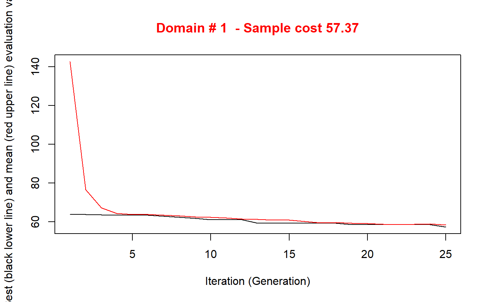

Spatial sampling with SamplingStrata
Giulio Barcaroli
2020-01-14
spatial.RmdOptimization with the spatial method
In order to illustrate the “spatial” method, we make use of a dataset generally employed as an example of spatially correlated phenomena (in this case, the concentration of four heavy metals in a portion of the river Meuse). This dataset comes with the library “sp”:
library(sp)
# locations (155 observed points)
data("meuse")
# grid of points (3103)
data("meuse.grid")
meuse.grid$id <- c(1:nrow(meuse.grid))
coordinates(meuse)<-c("x","y")
coordinates(meuse.grid)<-c("x","y")
lm_lead <- lm(log(lead) ~ dist,data=meuse)
summary(lm_lead)##
## Call:
## lm(formula = log(lead) ~ dist, data = meuse)
##
## Residuals:
## Min 1Q Median 3Q Max
## -1.13654 -0.33783 -0.04031 0.28741 1.75759
##
## Coefficients:
## Estimate Std. Error t value Pr(>|t|)
## (Intercept) 5.36505 0.06129 87.54 <2e-16 ***
## dist -2.32483 0.19735 -11.78 <2e-16 ***
## ---
## Signif. codes: 0 '***' 0.001 '**' 0.01 '*' 0.05 '.' 0.1 ' ' 1
##
## Residual standard error: 0.4842 on 153 degrees of freedom
## Multiple R-squared: 0.4756, Adjusted R-squared: 0.4722
## F-statistic: 138.8 on 1 and 153 DF, p-value: < 2.2e-16##
## Call:
## lm(formula = log(zinc) ~ dist, data = meuse)
##
## Residuals:
## Min 1Q Median 3Q Max
## -1.12573 -0.36442 -0.00161 0.31932 1.67774
##
## Coefficients:
## Estimate Std. Error t value Pr(>|t|)
## (Intercept) 6.53380 0.06172 105.87 <2e-16 ***
## dist -2.69991 0.19874 -13.59 <2e-16 ***
## ---
## Signif. codes: 0 '***' 0.001 '**' 0.01 '*' 0.05 '.' 0.1 ' ' 1
##
## Residual standard error: 0.4876 on 153 degrees of freedom
## Multiple R-squared: 0.5468, Adjusted R-squared: 0.5438
## F-statistic: 184.6 on 1 and 153 DF, p-value: < 2.2e-16
We analyse the territorial distribution of the lead and zinc concentration, and model (by using the universal kriging) its relations with distance from the river, using the subset of 155 points on which these values have been jointly observed:
library(automap)## Registered S3 method overwritten by 'xts':
## method from
## as.zoo.xts zoo## [using universal kriging]plot(kriging_lead,sp.layout = NULL, justPosition = TRUE)
## [using universal kriging]
Using this kriging model, we are able to predict the values of lead concentration on the totality of the 3,103 points in the Meuse territory:
df <- NULL
df$id <- meuse.grid$id
df$lead.pred <- kriging_lead$krige_output@data$var1.pred
df$lead.var <- kriging_lead$krige_output@data$var1.pred
df$zinc.pred <- kriging_zinc$krige_output@data$var1.pred
df$zinc.var <- kriging_zinc$krige_output@data$var1.pred
df$lon <- meuse.grid$x
df$lat <- meuse.grid$y
df$dom1 <- 1
df <- as.data.frame(df)
head(df)## id lead.pred lead.var zinc.pred zinc.var lon lat dom1
## 1 1 5.509360 5.509360 6.736502 6.736502 181180 333740 1
## 2 2 5.546006 5.546006 6.785460 6.785460 181140 333700 1
## 3 3 5.488913 5.488913 6.698883 6.698883 181180 333700 1
## 4 4 5.388320 5.388320 6.558216 6.558216 181220 333700 1
## 5 5 5.584415 5.584415 6.841612 6.841612 181100 333660 1
## 6 6 5.525538 5.525538 6.749216 6.749216 181140 333660 1The aim is now to produce the optimal stratification of the 3,103 points under a precision constraint of 5% on the target estimates of the mean lead and zinc concentrations:
library(SamplingStrata)
frame <- buildFrameSpatial(df=df,
id="id",
X=c("lead.pred","zinc.pred"),
Y=c("lead.pred","zinc.pred"),
variance=c("lead.var","zinc.var"),
lon="lon",
lat="lat",
domainvalue = "dom1")
cv <- as.data.frame(list(DOM=rep("DOM1",1),
CV1=rep(0.05,1),
CV2=rep(0.05,1),
domainvalue=c(1:1) ))
set.seed(1234)
solution <- optimStrata (
method = "spatial",
errors=cv,
framesamp=frame,
iter = 25,
pops = 10,
nStrata = 5,
fitting = c(summary(lm_lead)$r.square,summary(lm_zinc)$r.square),
range = c(kriging_lead$var_model$range[2],kriging_zinc$var_model$range[2]),
kappa=1,
writeFiles = FALSE,
showPlot = FALSE,
parallel = FALSE)##
## Input data have been checked and are compliant with requirements
## Sequential optimization as parallel = FALSE, defaulting number of cores = 1
## *** Domain : 1 1
## Number of strata : 3103
## *** Sample cost: 59.32339
## *** Number of strata: 4
##
## *** Sample size : 60
## *** Number of strata : 4
## ---------------------------This is the structure of the obtained strata:
plotStrata2d(framenew,outstrata,domain=1,vars=c("X1","X2"),
labels=c("Lead","Zinc"))| Stratum | Population | Allocation | SamplingRate | Bounds Lead | Bounds Zinc |
|---|---|---|---|---|---|
| 1 | 448 | 7 | 0.01451424 | 3.3146468764848-4.06742488200863 | 4.06901686494286-5.05032393651128 |
| 2 | 1189 | 22 | 0.01858814 | 3.93768665105216-4.63537007773586 | 4.99181734948747-5.83418589133431 |
| 3 | 822 | 17 | 0.02038060 | 4.60159647183526-5.33308379610959 | 5.4349363030154-6.29701396493421 |
| 4 | 644 | 14 | 0.02168767 | 4.91892537093519-6.16276083528614 | 6.29894213691231-7.33803658123577 |
that can be visualised in this way:
frameres <- SpatialPointsDataFrame(data=framenew, coords=cbind(framenew$LON,framenew$LAT) )
frameres2 <- SpatialPixelsDataFrame(points=frameres[c("LON","LAT")], data=framenew)
frameres2$LABEL <- as.factor(frameres2$LABEL)
spplot(frameres2,c("LABEL"), col.regions=bpy.colors(5))
We can now proceed with the selection of the sample:
s <- selectSample(framenew,outstrata,writeFiles=FALSE)##
## *** Sample has been drawn successfully ***
## 60 units have been selected from 4 stratawhose units are so distributed in the territory: